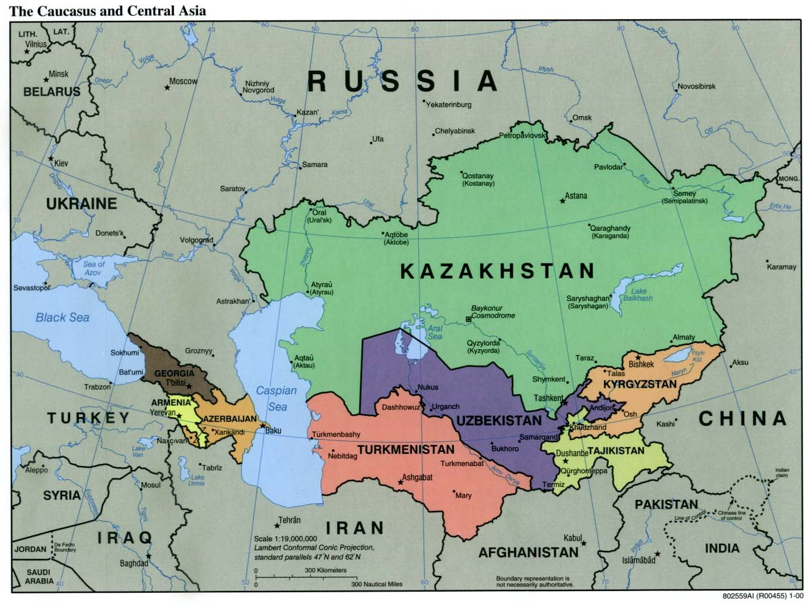

Markaziy Osiyoning hududiy tashkilotlari: SHHT, MDH, EAEU, KXShT, IHT va TDT tushuntirildi
Markaziy Osiyo davlatlari a’zo bo‘lgan asosiy tashkilotlar — SHHT, MDH, Yevrosiyo Iqtisodiy Ittifoqi, KXShT, IHT (ECO) va Turkiy Davlatlar Tashkiloti — ularning tashkil etilgan sanasi, a’zolari va O‘zbekistonning maqomi haqida faktlarga asoslangan ma’lumotnoma.

Markaziy Osiyo davlatlari — O‘zbekiston, Qozog‘iston, Qirg‘iziston, Tojikiston va Turkmaniston — bir qator hududiy va xalqaro tashkilotlarda ishtirok etadi. Quyida ushbu asosiy tuzilmalar, ularning tashkil etilgan sanasi, a’zolari va O‘zbekistonning maqomi faqat faktlar asosida, fikr yoki sharhsiz keltiriladi.
Shanxay Hamkorlik Tashkiloti (SHHT)
SHHT 2001-yil 15-iyunda Shanxayda (Xitoy) tashkil etilgan. Uning asosini 1996-yildan faoliyat yuritgan «Shanxay beshligi» (Xitoy, Rossiya, Qozog‘iston, Qirg‘iziston, Tojikiston) tashkil etadi; O‘zbekiston tashkilot tuzilgan 2001-yilda unga qo‘shilib, guruhni oltilikka aylantirdi. Kotibiyat Pekinda, mintaqaviy antiterror tuzilmasi esa Toshkentda joylashgan. Bugungi kunda tashkilotning 10 to‘liq a’zosi bor: dastlabki oltilikka 2017-yilda Hindiston va Pokiston, 2023-yilda Eron, 2024-yilda Belarus qo‘shildi. O‘zbekiston — SHHTning ta’sischi a’zosi (2001).
Mustaqil Davlatlar Hamdo‘stligi (MDH)
MDH 1991-yil 8-dekabrda (Rossiya, Belarus, Ukraina) tuzilgan va 1991-yil 21-dekabrdagi Alma-Ota bayonnomasi bilan kengaytirilib, yana sakkiz respublika — jumladan O‘zbekiston — unga qo‘shildi. Ma’muriy markazi Minskda (Belarus). O‘zbekiston 1991-yil 21-dekabrda Alma-Ota bayonnomasini imzolagan a’zo davlatdir.
Yevrosiyo Iqtisodiy Ittifoqi (YaII / EAEU)
YaII to‘g‘risidagi shartnoma 2014-yil 29-mayda Ostonada imzolanib, 2015-yil 1-yanvardan kuchga kirdi. To‘liq a’zolari — Rossiya, Belarus, Qozog‘iston, Armaniston va Qirg‘iziston. O‘zbekiston bu ittifoqning to‘liq a’zosi emas: u 2020-yil 11-dekabrdan buyon kuzatuvchi davlat maqomiga ega.
Kollektiv Xavfsizlik Shartnomasi Tashkiloti (KXShT)
KXShT 1992-yil 15-mayda Toshkentda imzolangan Kollektiv xavfsizlik shartnomasi asosida vujudga kelgan; rasmiy tashkilot sifatida 2002-yil 7-oktabrda tuzilgan. Markazi Moskvada. Hozirgi a’zolari — Rossiya, Armaniston, Belarus, Qozog‘iston, Qirg‘iziston va Tojikiston. O‘zbekiston 1992-yilgi shartnomaning dastlabki imzolovchisi bo‘lgan, keyin undan chiqqan (1999), 2006-yilda qayta a’zo bo‘lgan va 2012-yil iyunda (dekabrda rasmiylashtirilgan) a’zolikni yana to‘xtatgan. Shu vaqtdan beri O‘zbekiston tashkilotdan tashqarida.
Iqtisodiy Hamkorlik Tashkiloti (IHT / ECO)
IHT 1985-yilda Eron, Pokiston va Turkiya tomonidan tashkil etilgan (1964–1979 yillardagi Mintaqaviy taraqqiyot uchun hamkorlikning vorisi). 1992-yil 28-noyabrda unga yana yetti davlat — Afg‘oniston, Ozarbayjon, Qozog‘iston, Qirg‘iziston, Tojikiston, Turkmaniston va O‘zbekiston — qo‘shilib, a’zolar soni 10 taga yetdi. Kotibiyati Tehronda. O‘zbekiston 1992-yil 28-noyabrdan a’zo.
Turkiy Davlatlar Tashkiloti (TDT)
TDT (avvalgi Turkiy Kengash) 2009-yil 3-oktabrda Naxichevan bitimi bilan tuzilgan; 2021-yil 12-noyabrda Istanbulda bo‘lgan sammitda «Turkiy Davlatlar Tashkiloti» deb qayta nomlandi. Bosh kotibiyati Istanbulda. To‘liq a’zolari — Ozarbayjon, Qozog‘iston, Qirg‘iziston, Turkiya va O‘zbekiston; kuzatuvchilar — Vengriya, Turkmaniston va Shimoliy Kipr. O‘zbekiston 2019-yilda Bokudagi sammitda to‘liq a’zo bo‘ldi.
Markaziy Osiyo davlat rahbarlarining Maslahat uchrashuvlari
Bu — beshta Markaziy Osiyo davlati (O‘zbekiston, Qozog‘iston, Qirg‘iziston, Tojikiston, Turkmaniston) rahbarlarining, tashqi kuchlar ishtirokisiz, muntazam uchrashuv formati. Birinchi uchrashuv 2018-yil 15-martda Ostonada bo‘lib o‘tdi; formatning tashabbuskori O‘zbekiston Prezidenti Shavkat Mirziyoyev edi. Bu shartnomaviy tashkilot emas va doimiy kotibiyati yo‘q; uchrashuvlar taxminan har yili o‘tkaziladi.
Qisqacha jadval
- SHHT — 2001 (Shanxay); O‘zbekiston: ta’sischi a’zo
- MDH — 1991 (Alma-Ota bayonnomasi); O‘zbekiston: a’zo
- YaII / EAEU — 2014-imzo, 2015-kuchga kirdi; O‘zbekiston: kuzatuvchi (2020)
- KXShT — 1992-shartnoma, 2002-tashkilot; O‘zbekiston: chiqqan (2012)
- IHT / ECO — 1985, kengayish 1992; O‘zbekiston: a’zo (1992)
- TDT — 2009 (Naxichevan); O‘zbekiston: a’zo (2019)
- Maslahat uchrashuvlari — 2018-yildan; O‘zbekiston: tashabbuskor
Eslatma
Yuqoridagilar tashkilotlarning tasdiqlangan tashkil etilgan sanalari va a’zolik holatini aks ettiradi. A’zolik va maqom vaqt o‘tishi bilan o‘zgarishi mumkin; eng aniq ma’lumot uchun har bir tashkilotning rasmiy manbalariga murojaat qilish tavsiya etiladi.
Manbalar
- SCO Secretariat — official site
- Britannica — Commonwealth of Independent States
- Eurasian Economic Union — official site
- OSW — Uzbekistan withdraws from the CSTO once again (2012)
- Economic Cooperation Organization — History
- Organization of Turkic States — official site
- UN — Joint Statement, Consultative Meeting of Heads of State of Central Asia